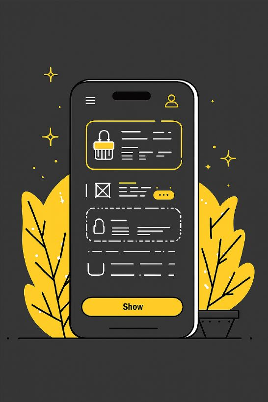
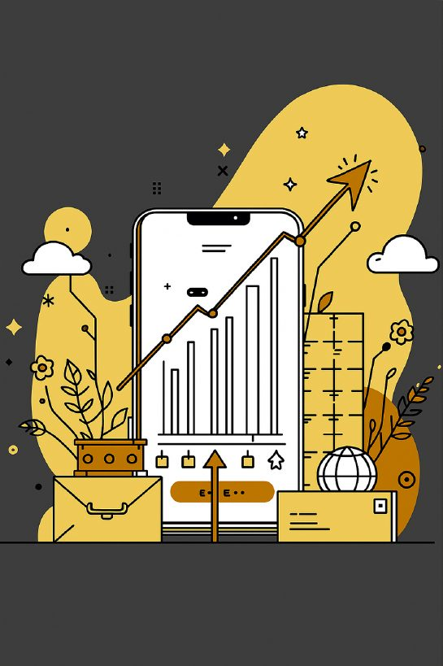
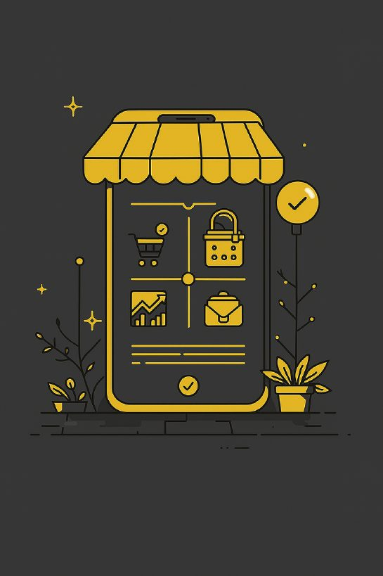

Breadle
Aplicativo gamificado de leitura, que usa rankings, desafios, interações sociais e grupos como principal diferença de outros aplicativos de leitura.
Conheça o projeto Ver as telas
Quem somos
O Breadle é uma plataforma digital gamificada voltada ao incentivo e acompanhamento da leitura, com foco principalmente em estudantes e leitores que desejam criar e manter hábitos de leitura.
A proposta parte do problema de que muitas pessoas têm dificuldade em manter constância na leitura, acompanhar seu progresso e encontrar motivação para continuar lendo.
Nosso nome vem da ideia de "Book + Battle", que significa Batalha de Livros, em inglês — refletindo nossa ideia de criar um ambiente onde os usuários podem competir de forma amigável, enquanto leem livros.
Propósito e objetivos do projeto
Criar uma plataforma digital gamificada voltada ao incentivo e acompanhamento da leitura, com foco principalmente em estudantes e leitores que desejam criar e manter hábitos de leitura.
🎯 Objetivo principal
Incentivar a criação do hábito de leitura, aumentando os índices de leitores entre os mais jovens e universalizar o acesso aos livros.
💡 Diferenciais
Meios de registro e acompanhamento do progresso, com metas, desafios, recompensas e interação social.
📈 Visão futura
Expandir para fornecer os mais diversos livros e participar da propagação nacional de livros.

Objetivos de Desenvolvimento Sustentável (ODS)
O Breadle contribui com três dos objetivos da Agenda 2030 da ONU.
-
- Busca garantir uma educação inclusiva e de qualidade.
- Incentiva o hábito da leitura, melhora a interpretação de textos e auxilia estudantes no aprendizado e na preparação para vestibulares.
-
- Incentiva a criação de soluções tecnológicas inovadoras.
- O aplicativo utiliza a gamificação como uma forma diferente de estimular a leitura.
-
- Busca promover inclusão e igualdade de oportunidades.
- O projeto pode ajudar diferentes estudantes a terem mais acesso ao incentivo à leitura e ao desenvolvimento educacional.
Identidade visual
Cores estrategicamente escolhidas para comunicar confiança, dinamismo e inovação da plataforma.
Bege
Conforto e leveza. Menos estresse e fadiga.
Preto
Segurança, confiabilidade e profissionalismo. Base sólida para a experiência do usuário.
Azul
Calmaria, descanso e sossego. Raciocínio lógico.

Telas do aplicativo
Protótipos das principais telas do Breadle, do login ao painel do professor. Toque em uma tela para ampliar.
Equipe de desenvolvimento
Profissionais dedicados trazendo expertise e criatividade para transformar a visão em realidade.
Felipe Santos Souza
Líder técnico e desenvolvedor geral
Gabriel Chaves
Desenvolvedor front-end
Matheus Guerino
Gerente de processos e desenvolvedor visual
Matheus Aurichio
Desenvolvedor back-end
Victor Sisnande
Analista e organizador de dados
João Victor Acioli
Auxiliador geral